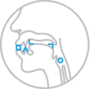

Gramática: las 5 consonantes iniciales
Ya sabemos que este alfabeto fue creado con la idea de facilitar la memorización de los sonidos y su representación gráfica. Por ello, las primeras consonantes que tendremos que aprender son las 5 consonantes iniciales: ㅁ, ㄴ, ㄱ, ㅅ, ㅇ.
Estas consonantes simples forman la base del Hangul y son fundamentales para comprender el sistema de escritura coreano. El resto de las consonantes simples del Hangul se crearon añadiendo nuevas líneas o trazos a estas formas básicas, lo que las hace fácilmente reconocibles y memorizables.
Si vemos el gráfico siguiente, puedes ver la representación "la forma de los órganos del habla humana como los labios, lengua y garganta" al producir sonidos de estas 5 consonantes ㅁ, ㄴ, ㄱ, ㅅ, ㅇ.
Pero, ¿que sonidos estais produciendo al seguir estos graficos?
- ㅁ: se pronuncia con los labios cerrados, creando una oclusión, y se clasifica como una consonante bilabial. Produce un sonido similar a la /m/. Intenta reproducir el sonido y fijate en que haces para ello.. mmmmmmmm
- ㄴ: la consonante ㄴ se pronuncia con la punta de la lengua tocando el alvéolo, lo que la convierte en una consonante alveolar. Esta posición produce un sonido similar /n/ en español. Intenta reproducirlo.... nnnnnnnnnn
- ㄱ: se pronuncia con el dorso de la lengua contra la parte posterior del paladar, lo que la hace una consonante velar. Esto le confiere un sonido gutural. Intenta pronunciar un /ka/ o /ga/ repetidas veces... kakakakka gagaggagaga ¿alguna diferencia?
- ㅅ: se pronuncia con la punta de la lengua contra los dientes superiores, lo que la clasifica como una consonante dental. Intenta pronunciar una /s/ con la lengua apoyada en los dientes... ssssssssssssssssssssssss
- ㅇ: es una consonante glotal, lo que significa que se produce con el cierre momentáneo de la glotis. Intenta pronunciar una /ng/ ..... ngngngngngn

Comprender estas posiciones de articulación nos ayudará a pronunciar correctamente las palabras en coreano y a distinguir entre los diferentes sonidos del idioma.
Pero, como siempre te digo, no te desanimes ya que lo importante será pronunciar palabras, no letras sueltas.
{kind=link}
{kind=link}
{kind=link}
{kind=link}
{kind=link}